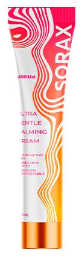

Secreto de mi curación de la psoriasis.
ESTE METODO SIMPLE ES DISPONIBLE PARA TODOS. AYUDA A 93% DE LAS PERSONAS
Hola amigos. Quiero compartir con vosotros una información. Es bastante importante para los que sepan que son la picazón en la piel, las uñas con peladuras y las grietas en la piel.
Hace año conseguí curarse de la psoriasis . Lo hice sin remedios caros y tratamientos complejos. Sin doctores. En casa, solo al cabo de dos semanas “destruí” la psoriasis crónica de que sufría tantos años y mejoré mi salud . Me curé solamente y ahora voy a hablaros como podéis curarse. ¿Es difícil creer? Por supuesto. Tengo un secreto que os voy a contar. Os ayudará.
TAMBIÉN PODRÁS CURARSE DE LA PSORIASIS Y VIVIR UNA VIDA SANA
La psoriasis apareció en mi cuerpo hace 8 años. Trabajaba en la construcción y me puse enfermo. Y apareció la psoriasis. Bueno, tenía un periodo muy mal de vida porque me divorcié de mi marida. Aparecieron ampollas rojas en la piel, la picazón, grietas en las talones etc. Hice algunas pruebas y me diagnosticaron la psoriasis. Desde entonces empieza mi lucha difícil contra esta enfermedad.
Durante los años del tratamiento tomé muchísimos antibióticos, procedimientos, ungüentos y varios remedios tradicionales. Visitaba muchos doctores hasta los mejores de mi ciudad. Por supuesto, hubo resultado, los síntomas más serios se iban, pero no la psoriasis crónica . Cada vez después de alguna enfermedad se aparecía otra vez.
CON LA PSORIASIS EMPECÉ A TENER PROBLEMAS ENTRE LA FAMILIA…
Me acostumbré a la enfermedad. Pero empecé a tener problemas con mi virilidad . El doctor dijo que es una consecuencia de la enfermedad y 90% de los hombres la tiene. Tenía miedo porque tenía 47 años y no planeaba terminar la vida sexual.
Con la psoriasis aparecieron nuevos problemas en la familia (ya con la segunda esposa), peleábamos mucho. Era más joven que yo, no tenía hijos y por eso de verdad temía que pudiera dejarme. No le atraía con mis manchas rojas en el cuero y si el hombre no satisface la mujer ella le deja. Es la ley de la vida.
EL MÉTODO QUE ME AYUDÓ A SALVAR LA VIDA FAMILIAR Y SEXUAL Y CURARSE DE LA PSORIASIS
Conseguí no solo mantener la unidad de la familia sino también curarse de la psoriasis crónica. Me ayudó la crema , que compré porque no sabía qué hacer. Pero resultó que era el único remedio eficaz. Sentí el efecto casi inmediatamente.
No tenía el color normal en mis codos por 1000 años. Y en la espalda también. Pero por la mañana vi que no había las manchas. Primero no creé, pero mi esposa me dijo que de verdad no las tenía. Con el paso del tiempo ayudaba más y más.
La piel se puso suave y limpia. Se eliminaron todos los síntomas de la psoriasis. Después del curso completo del tratamiento (3 semanas) hice las pruebas y me mostraron que no tenía la psoriasis! Lo mismo me decían cuando tomaba antibióticos, pero cada vez la psoriasis aparecía después de unos meses. Ya han pasado 10 meses pero no la tengo. Ningún síntoma.
Me gustó tanto el efecto que…
Para ser honesto, no puedo creer que me curé de la psoriasis . De verdad me ayudó más que otros remedios . Y no solo a mí.
Recomendé esta crema a otros (hablaba con ellos en una página-web), y les ayudó también. También se curaron de la psoriasis crónica. Por eso se puede decir que la crema de verdad es eficaz y funciona perfectamente . Pues, recomiendo a todos.
Mirad a mi foto:
Hace un año apliqué la crema por primera vez y desde entonces fui rejuveneciendo. El primer efecto sentí durante el tercer día del curso . La picazón y enrojecimientos se fueron. Y después del mes era sano.
Se puede leer más de la crema en la PÁGINA-WEB OFICIAL de la proveedor a la Colombia
Pido a todos que escriben sus comentarios.
Es interesante saber a quién le ayudó la crema.